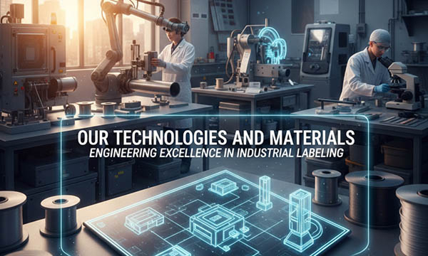

In the demanding world of industrial manufacturing, the quality of a machine is often judged by the durability of its identification. At SignXpert, we don’t just create signs; we engineer high-performance labeling solutions designed to survive where others fail. From the heavy industries of Germany to the high-tech laboratories of Switzerland and the offshore rigs of Norway, our materials set the European standard for durability, precision, and safety.
Our technology is built on four pillars: Advanced Laser Engraving, High-Performance Polymers, Industrial-Grade Adhesives, and Regulatory Compliance. Whether you are in France, Italy, Poland, Austria, the United Kingdom, or the Benelux countries, SignXpert provides the technical foundation for reliable asset identification and safety.
1. Advanced Two-Layer Polymers: The Core of Our Durability
Unlike surface-printed labels that fade or peel, SignXpert utilizes specialized two-layer acrylic-based polymers. Our materials are engineered for the harshest industrial conditions across Europe.
- Laser-Etched Precision: Our laser technology removes the top layer of the material, physically etching the information into the core. This ensures that technical data, serial numbers, and safety warnings remain 100% legible even under extreme mechanical wear.
- UV Stability and Weather Resistance: Designed for outdoor use in solar farms and construction sites, our plastics are UV-stabilized to prevent yellowing, cracking, or fading under the intense sun of Italy or the freezing temperatures of Norway.
- Chemical and Oil Resistance: Our materials are inert to most industrial lubricants, hydraulic oils, cleaning agents, and fuels, making them the “Best Fluid” choice for machinery and hydraulic systems.
2. 3M™ High-Performance Adhesives: Bonding Without Compromise
A label is only as good as its bond. To ensure that our industrial plates stay exactly where they are placed, SignXpert exclusively uses 3M™ High Performance Adhesive Transfer Tapes.
- Extreme Adhesion: Engineered to bond “permanently” to high-surface-energy and low-surface-energy materials, including stainless steel, powder-coated metals, and industrial plastics.
- Temperature Resilience: Our 3M™ adhesive layers maintain their integrity in temperatures ranging from -40°C to +150°C, ensuring stability in engine compartments or cold-storage facilities.
- Vibration Resistance: Ideal for the machinery and elevator industries, where constant vibration can cause standard adhesives to fail.
3. Safety First: Dielectric and Flame-Retardant Properties
In sectors like Electrical Engineering, IT Infrastructure, and Data Centers, safety is a technical requirement. Our materials are designed with these critical factors in mind:
- Dielectric Materials: Our polymer-based labels do not conduct electricity. This makes them the safe choice for marking high-voltage switchgear, circuit breakers, and sensitive electronic components in Germany’s most advanced power grids.
- Flame Retardancy: Our materials meet international safety standards (such as UL 94), ensuring they do not support combustion—a vital feature for the aerospace, automotive, and lift industries across Europe.
4. Precision Engineering: Thickness and Flexibility
Different applications require different physical properties. SignXpert offers a range of material thicknesses to meet every engineering challenge:
- 0.8 mm Flexible Series: Perfect for curved surfaces like hydraulic cylinders, pipes, and motors. These thin plates offer the durability of a rigid sign with the flexibility of a label.
- 1.6 mm Industrial Series: Our standard for technical rating plates, CE marking plates, and machine identification. These plates provide the “heavy-duty” feel and structural integrity required for high-end mechanical engineering.
- Metallic Finishes (Gold, Silver, Brushed Steel): We provide the aesthetic appeal of metal with the lightweight, non-corrosive, and non-conductive benefits of high-tech polymers—ideal for the furniture, lift, and medical industries.
5. Digital Integration: Smart Labeling for Industry 4.0
The future of European industry is digital. SignXpert integrates modern tracking technology into our durable materials:
- QR Codes and Barcodes: Our high-resolution laser engraving ensures that QR codes remain scannable for years, enabling digital O&M (Operation and Maintenance) and instant access to technical documentation.
- Data-Driven Production: Our online system allows for the seamless import of complex datasets, ensuring that every serial number and asset tag is produced with 100% accuracy.
Why European Engineers Trust SignXpert Technologies
By combining the best of German engineering standards with the fastest production cycles in Europe, SignXpert delivers more than just a product—we deliver a guarantee. Our labeling solutions are designed to comply with DIN, ISO, and European CE directives, ensuring your equipment is ready for inspection in any market, from France to Poland.
With SignXpert, you are choosing a partner that understands the chemistry of adhesives, the physics of laser engraving, and the demands of the modern industrial world. Protect your brand, ensure your safety, and optimize your maintenance with the most advanced labeling technology in Europe.